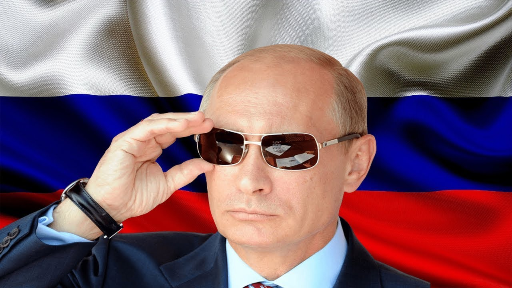

НОД
Цели и задачи НОД
Освобождение Российской Федерации от колониальной зависимости США путем восстановления
Суверенитета через референдум о изменении конституции. Содействие единению и взаимному
доверию, сотрудничеству, гражданской солидарности во имя исторического успеха России,
её свободы, процветания, благополучия и безопасности
-
Поддержка и обеспечение прямого и постоянного диалога
между гражданами и Главой государства, общественного мониторинга и гражданского контроля исполнения законов,
президентских инициатив и иных приоритетных государственных решений и программ.
Вовлечение граждан, организаций и институтов
гражданского общества в постоянную совместную работу по определению приоритетов многостороннего развития России,
содействие расширению возможностей народовластия, реальному участию всех активных и неравнодушных граждан в выработке
решений органов государственной власти и органов местного самоуправления.
-
Укрепление социального партнёрства и
гражданской взаимопомощи, поддержка общественной самоорганизации, социального творчества, добровольчества, иных созидательных
гражданских инициатив по решению важнейших вопросов развития страны
- Установление международных связей с общественными объединениями, действующими
на территории других государств и выбравшими путь избавления от колониальной зависимости,
обретения суверенитета.
Памятка участнику
-
1. Право на проведение пикетирования гарантируется ст. 31 Конституции РФ,
где указано, что Граждане Российской Федерации имеют право собираться мирно, без
оружия, проводить собрания, митинги и демонстрации, шествия и пикетирование.
Аналогичные положения закреплены в Федеральном законе от 19.06.2004 г.
№ 54-ФЗ “О собраниях, митингах, демонстрациях, шествиях и пикетированиях” – в преамбуле закона.
-
2. Проведение публичного мероприятия в форме одиночного пикетирования должно быть законным, то есть
соответствовать требованиям действующего законодательства по форме, содержанию и порядку его
проведения, и добровольным.
-
3. Одиночное пикетирование представляет собой по закону форму публичного выражения мнений,
осуществляемую без передвижения и использования звукоусиливающих технических средств путем
размещения у пикетируемого объекта одного гражданина, использующего плакаты, транспаранты и иные
средства наглядной агитации.
- 4. Проведение пикетирования носит
уведомительный характер, однако, для проведения пикета одним физическим лицом не требуется подача
уведомления в органы власти.
Ссылка на сайт

НАШ ЛИДЕР